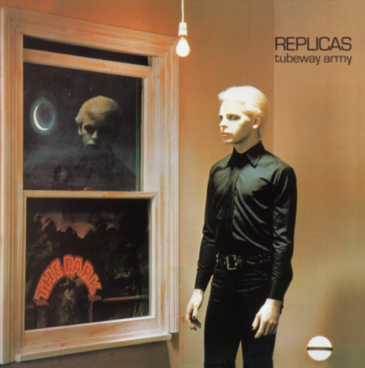

-
Home
Veronika Romaniuk
This Mediated Life: Final Paper
24 January, 2022
New-Age Goth: The Tortured Meta-Cultural Individual
The 1983 film The Hunger depicts a New-Age idea of goth, one that is tied up with the underground permittance and exclusivity of party culture. Although goth became associated with a rock music subculture in 1970’s Britain, truly, goth speaks to the seclusion of a solitary and powerful individual. Unwilling to partake in conventional culture, the goth lives on the outskirts and carries out his own pursuits. He is in pursuit of eternal themes: mortality and deep personal relationships. He avoids conventional cultural settings, but the rise of underground club culture in the second half of the 20th century has given the goth a new outlet of connection. Bowie’s role in the film speaks to the power of underground celebrity.
Historical figures like Van Gogh have long been revered in hindsight, admired for their mysterious, isolated existence. This is the figure of someone who did not network in their lifetime, but pursued themes of the eternal in seclusion. This type of tortured individual has been often depicted in the novels of the 20th century, a time of political turmoil and nihilism: Herman Hesse’s Steppenwolf and Damian, Dostoyevsky’s Notes from the Underground, portray the individual who finds no place in his immediate cultural surrounding, which sets him on a journey of isolation, and in its best, may lead to a content quiet life with fellow unconventional individuals. However, the multi-layered nature of modern urban culture began to allow such individuals to come together in an underground setting, to create and share their art without complying to the conventional cultural narratives.
The underground party setting arose with and alongside the cultural style of punk, which seems both antithetical to the ideology of the goth individual, but also closely aligned with it. The antithesis comes from the political nature of punk. Whereas punk has to do with collectively subverting the political, gothic culture has more to do with individual trauma and liberation. Michael Bibby writes in Goth: Undead Subculture “Punk’s ethos—its militant, unisexual anarchy—was challenged by the gothic’s romantic obsessions with death, darkness, and perverse sexuality. Punk’s carnivalesque but often rigid male body (epitomized by the “pogo” dance) was supplanted by an androgynous gothic body,” (Bibby, 2007). Goth seems to be not so much a collective sub-cultural movement, as a characteristic of the personal style of isolated unconventional individuals. An argument can be made that speaking about goth as a sub-cultural movement makes little sense because by definition the goth is a secluded figure, but the permittance of modern cities and liberation of identity has allowed for the elevating of gothic themes to a realm of the shared. While goth as a subculture does not aim for the political subversion of punk, it aims for the liberation of the grotesque and the perseveres, which inhabits the minds of its individuals.
The scope of this essay focuses on the male goth in its powerful juxtaposed with the classical male hero, though androgyny is the style and heart of the gothic male. The classical male hero has a place in his community and embarks on a quest for the its betterment, thereafter reaffirming his place and taking on greater communal responsibility; meanwhile, the goth does not hold a conventional place in society, so his struggle is largely his own, shared only by those close to him. The goth has de-culturalized himself from the conventions surrounding him, and his story has not in its entirety to do with community, but more so with personal trauma, romance, and mortality. The lines to Bauhaus’ ‘Bela Lugosi’s Dead’ aestheticize the secluded story of the goth:
“The virginal brides file past his tomb,
Strewn with time’s dead flowers,
Bereft in deathly bloom
Alone in a darkened room…”
The lyrics speak to the male goth; there is an atmosphere of romance, though not living, but dead romance. A fantasy of polygamy seems to permeate the aesthetic of the male goth; however, the overarching goth experience is one of loneliness. Also, as depicted in The Hunger, intense and long-lasting romantic relationships are part of the gothic nature. The lyrics evoke a sense of isolation in the midst of society – being alone in a darkened room evokes a sense of cultural entrapment. Even though the goth is not living by society’s rules, he is still inevitably confined by society.
A theme of societal entrapment is further represented in the album cover of Replicas by Tubeway Army (Fig.1).

Fig. 1. Cover of album Replicas by Tubeway Army.
This album cover depicts a dissatisfied, but contending reaction to excessive cheap cultural entertainment, represented by “THE PARK” and to enclosed spaces, which separate one from the natural setting, inhabited by the moon. This album cover suggests that the dark dress style of the goth resonates with serene and natural quality of the night. The modern goth aesthetic depicts an inevitable entrapment in solitary enclosed spaces and a resonance with the time of day when culture has gone to sleep, and nature reigns. Goth shows that in a surrounding of artificial cultural values, some prefer to be alone and in the dark.
While the underground scene of the party offers an emotional release from the cultural, it is still deeply embedded in cultural values. ‘She’s in Parties’ by British band Bauhaus sheds light on both the role of the feminine in the New-Age goth aesthetic and the corruptibility of the party scene. It speaks to the power of party culture in establishing the self in a specific type of community. Although the underground party seems an outlet for the gothic individual, it is not exactly the typical homeland of the goth; the party is an artificially-created environment, with the pace of the music and lights – a top-down phenomenon. The ability to let loose of own cultural indoctrination so as to enter the shared flow of the party is a trait characteristic of the archetypal feminine. In order to flow with the underground community, the individual must surrender himself to the party. However, the party scene in The Hunger shows the character of Bowie stiff and goal-oriented in the club setting. He is thirsting for blood and anticipates luring the fellow party-goers to satisfy his hunger. The goth man pursues his own agenda in even the communal circumstances. Interestingly, ‘She’s in Parties’ is said be in reference to Marilyn Monroe (Williamson, “Behind The Lens”) who used a free-flowing social identity to ascend the social ladder. Bauhaus warns about the party: while it seems alluring and free-spirited, culture and ambition is very much at play in the party scene. While the New-Age goth must be able to let loose at the underground party setting, he also keeps to his individualistic nature in the midst of it.
The elevation of such underground culture to the level of artistic acclaim has been made possible through modern media outlets. The character of David Bowie attending a party in the Hunger signifies how prestigious underground parties can be. The real David Bowie, too, seems to have partied in Berlin and in other underground hubs. In New York City, Andy Warhol and the Velvet Underground were setting the tone for the artistic prestige of the underground. Precisely in this setting, goth may become aestheticized and simulated by those who look up to such celebrities. In this sense, goth style becomes not so much a signifier of own isolation from surrounding society, but an indication of comradery with particular individuals who may yet be out of reach. The Brian Jonestown Massacre sing in their song “(David Bowie I Love You) Since I Was Six”:
“Does she love you, you suppose,
With somebody who would know,
Who believes in what you are.
You’re my favorite thing by far.
There’s a fire in your eyes.
I see it all sometimes,
In the darkness of the night.”
The first lines speak to a speculation on the personal lives of revered gothic figures, and the last – to the deep connection that a consumer of their art can experience within his own entrapping cultural circumstances. The consumer of the art may strive to get ‘on-the-level’ of the revered individual, becoming released from his own cultural confines and finding a place in the creative world. The elevation of the gothic figure to celebrity has served as a source of comfort and ambition to individuals isolated in their own cultural circumstance.
Alongside the positives, a danger of gothic celebrity and underground culture is an aestheticization of drug use and abuse. Another film featuring David Bowie, Christiane F. – Wir Kinder vom Bahnhof Zoo (1981) tells the story of a fourteen-year-old girl in Berlin who becomes addicted to heroin through the party scene. It depicts how underground culture can lead one down a dark road of drug abuse. Bowie’s own character of the Thin White Duke, depicted in the film, is an elevation of the drugged figure to cult status. The film (based on self-written story of personal experience by Christiane F.) comments on how the cult of celebrity around such gothic individuals perpetuates an anesthetization of the ‘fucked up’ drug state among young adults. The prominence of Kurt Cobain in the 1990’s and his early death led to many narratives about his heroin use, both among the media and among fans. His suicide prompted a wave of suicides among his fans, once again revealing the danger of the cult status of the gothic, and Cobain’s drug use became a source of curiosity and fascination among the public, inspiring numerous biopics, as well as an aesthetically-driven social conversation of ‘grunge’. In the 1990s, the fashion world came to aestheticize the ‘heroin chic’ with icons in modeling like Kate Moss. The world-wide craving for the ‘fucked up’ of drugs permeated music, film, and fashion. Seeing the physical suffering of individuals at the hand of drugs was a portal into beyond the everyday, into a land of the underground and the gothic.
Even for those on the inside of the underground party, a sense of gothic intimidation makes the experience exciting and profound. It is an intimidation before the power of the de-culturalized collective experience and a shared awareness of mortal death due to drugs and mental instability that sometimes reign fellow party-goers. Though the shared goal of the party is to have fun, the reigning of emotional truth requires an overall attentiveness to the fellow individuals’ suffering. The goth represents someone whose suffering is so large, that he embodies that intimidation, and helping hands can sometimes get sucked into his strange world of the isolated and sometimes, the violent. In The Hunger, it is in the club that Bowie’s character and his lead vampire partner seek out their prey. In this vampirism is illustrated the craving of the tortured outcast to feed on the naïve optimism of the fresh-blooded. Ultimately, the gothic individual wants connection, but his isolated nature makes sharing in his lifestyle draining and isolating. The underground party is a place where the nature of the goth can be brought to life. Sexual perversion and drug abuse seem to be the core of the ‘fucked up’ that shapes a modern gothic aesthetic.
The figure of Russell Brand in modern TV offers an exciting exploration of goth. Russell Brand rose to prominence though comedic television appearances, stretching from his teenage and young adult years of partying and drugs. The television personality that Russell Brand has cultivated is one of brutal honesty about his past. He presents himself as a former ‘sex-addict’, and a former ‘drug-addict’. These two characteristics of the gothic appeal make Brand a captivating television personality – in a television world overwhelmed with propriety, Russell Brand’s honest conversation about these topics and his quick-witted sense of humor make him a breath of gothic fresh air. Brand does not attempt to represent a sub-culture or embark on a political quest (at least, not until his later years), as would be characteristic of young punk; instead, he represents his own persona and acknowledges his gratification of the goth desires. His role in British television reveals goth as a force of individualism, and makes Brand a pioneer of televised gothic comedy.
Another popular culture figure that represents gothic characteristics, though in a somewhat family-friendly way, is Captain Jack Sparrow. He is the embodiment of a free individual who lives on the margins of society and pursues his own interests. His story depicted in the popular Disney films makes him out to be a counter-cultural hero – an individual who paves his own unconventional road and has a fun time doing it. While Captain Jack does not entirely share in the sexual perversion and drug abuse of the New-Age goth, he does sport a drinking problem and seems to belongs to an underground network of some peculiar individuals, with whom he shares strong personal connections. The localization of Captain Jack’s story in the past makes his gothic nature a suitable viewing experience forw the enjoyment of children. Johnny Depp, himself, may be considered an iconic gothic individual of the modern day. When rising to prominence with TV series “21 Jump Street” (1987), Depp made a conscious decision to distance himself from classical roles, and dove into the more gothic waters on Edward Scissorhands (1990), Benny and Joon (1993), and eventually finding a fruitful collaboration with gothic icon Tim Burton. Depp has said that he felt there was a strong lack of ‘rock-and-roll’ actors in Hollywood, who wouldn’t sacrifice their own persona to appease the tastes of the commercial public (Depp, 2016). His own connection to rock-and-roll, and the connection of rock-and-roll to goth and to film can further be explored extensively, but within the film industry of Depp’s time, the commercial success of his ‘odder’ films revealed that the true public does have a strong taste for the gothic and the unconventional hero.
The true tastes of the public have been gradually becoming revealed through greater accessibility to technology and thus the increasing capacity for unconventional stars to his to cultural prominence. Storytelling themes that shoot beyond a cultural quest and into the individualistic quest are coming into the spotlight, as mass media brings the art of the marginal to collective awareness. The possibility to share personal story has advanced with technological innovations: after the invention of the printing press, and the camera, was invented the internet, elevating the personal story to unprecedented international scales though the power of artistic storytelling. Art in the hands of the individual steps beyond narratives of ethnic or nationalistic cultures and into the culture of the eternal, where themes of the contention with mortality and the love for treasured individuals take hold. Cultural borders progressively lose meaning in a world shaped by individuals, and, speaking to masculinity, the eternity-oriented secluded man becomes elevated above the culturally-indoctrinated law-abiding man. The goth individual is a counter-intuitive popular-culture icon because by definition he does not comply with traditional surrounding cultural fabric, but, he appeals to the ultimate core of any viewer – their individuality beyond culture. In a modern landscape of industry and wage labor, the public increasingly can reveal itself to be attracted to the aesthetic of individual liberty that goth provides.
Popular media has classified goth as a subcultural movement in order to make sense of it in within conventional cultural narratives. Goth has become crafted into a superficial image and its ideological style and influences have been understated in the public eye. I, personally, had dismissed the word goth as a trait characteristic of ‘edgy’ kids, until I came across a YouTube video titled “Before Bauhaus: How Goth Became Goth”, and came to discover that much of the music I enjoy is representative of the goth aesthetic. In fact, from film characters, to musicians, to comedians, goth seemed to be the thread link to art which resonated with me. The themes of the eternal: death, connection with loved ones – themes which transcend culture, resonated with my own internationally-residing spirit. In a world where people are moving across borders and boundaries, mass media can hardly keep up. For the same reason that it transcends cultural tradition, goth rarely gets well-represented on mass media outlets – the gothic link with substance use and unconventional sexuality makes it a subject which cultural thinkers tend to avoid. A question arises of whether goth is compatible with family, with gothic art like The Hunger suggesting the contrary. The Addams Family (1991), however, offers an image of a gothic family, which may represent goth more as a familial cultural tradition rather than a purely individualistic spirit focused on gratifying own desires, but the personal stories on the outskirts of society come into play with the fascination with mortality and intense long-lasting romance in the public eye. While with stories like that of the Addams Family is perpetuated a vision of an embellished gothic culture, rather than goth as an individual’s attitude to his own cultural circumstances, New-Age gothic art, such as the album cover of Tubeway Army’s Replicas, communicates goth to be a reaction to the stiff culture of superficial entertainment. The true goth nature of the individual is a signifier for Man’s tortured connection with the eternal. The culture of goth is a peculiar awareness of own mortality, a recognition of own soul as eternal, and a treasuring of romance. The New-Age phenomenon of the elevation of gothic aesthetic and underground parties combines with the emergence of a counter-cultural network of individualistic art, which establishes itself to be more meta-culturally inspired than conventional measures of propriety. Whether goth is compatible with family is unfortunately no easy question and perhaps each individual must for himself mediate the eternal quest between his isolated meta-cultural gothic individuality, and both the joy and struggle of belonging to a culturally-embedded family.
�
Sources Cited
Bibby, Michael (2007). Goth: Undead Subculture. Duke University Press.
Depp, Johnny (2016). “Johnny Depp & Lawrence Krauss (PT01): Finding The Creativity In Madness”, YouTube.
Williamson, Faye. “Behind The Lens: Bauhaus’ She’s In Parties”, https://www.furiomagazine